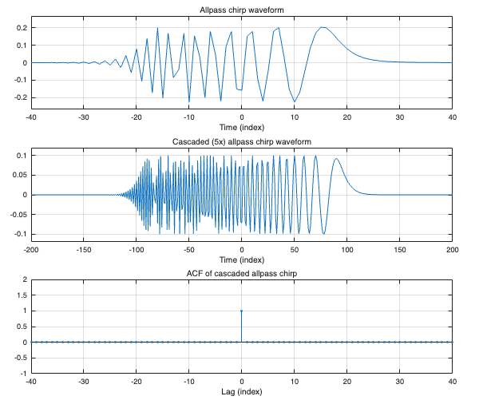

real_cascade_example_01
Cascading allpass chirp multiple times.
Supplement to the paper "Allpass-Based Chirp Design with Perfect Pulse Compression Property"
Ivan Selesnick February, 2025 - June, 2026
Contents
clear
All-pass chirp system
K = 8; tau = 20; tau_range = [3.3*K - 8.5, 3.3*K - 5.1]; % recommended range for tau Nf = 512 ; % FFT grid points [apc, target_funs] = real_allpass_chirp(K, tau, Nf); % plot_real_allpass_chirp(apc);
Cascade
L = 5; cc = cascaded_allpass_chirp(apc, L);
ans = 6.6613e-16
Plots
figure(1) clf TIL = tiledlayout(3, 1 , 'Padding','compact', 'TileSpacing','compact'); nexttile plot(apc.n, apc.h) grid on zoom on xlim([-1 1] * apc.duration) xlabel('Time (index)') title('Allpass chirp waveform') ylim([-1 1] * 1.2 * 1/sqrt(apc.duration/2)) nexttile plot(cc.n, cc.h) grid on zoom on xlim([-1 1] * apc.duration * L) xlabel('Time (index)') title(sprintf('Cascaded (%dx) allpass chirp waveform', L)) ylim([-1 1] * 1.2 * 1/sqrt(cc.duration/2 )) % Verify that the autocorrelation is an impulse nexttile stem(1-cc.N:cc.N-1, cc.xcorr, '.-') zoom on grid on xlabel('Lag (index)') title('ACF of cascaded allpass chirp') xlim([-1 1] * apc.duration) ylim([-1 2]) orient tall print -dpdf -fillpage real_cascade_example_01_fig
